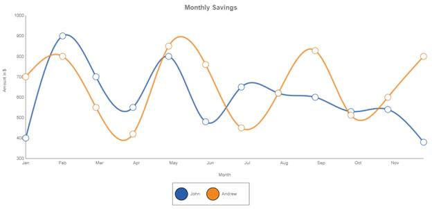

A spline chart is similar to a line chart except that it connects the different data points by using splines instead of straight lines.
When rendered in 3-D, the plot looks like a ribbon and hence such types are also referred as ribbon or strip charts.
The appearance of the lines and the points can be configured with options such as the colors used, thickness of the lines, and the symbols displayed.
Chart Details
|
Number of Y Values per Point |
1 |
|
Number of Series |
One or more |
|
Cannot be Combined with |
Pie chart |
Spline series can be added to the chart using the following code.
|
[C#] Series series = new Series("CompanyA");
series.Points.Add(1991, 14.9); series.Points.Add(1992, 27.3); series.Points.Add(1993, 19.8); . . .
series.Symbol.Visible = true; series.Style.Interior=new GradientInfo(new ColorInfo(Color.Chocolate)); series.Symbol.Shape = SymbolShape.Circle;
series.Type = SeriesType.Spline; this.ChartAdv1.Series.Add(series);
Series series1 = new Series("CompanyB"); series1.Points.Add(1991, 17.9); series1.Points.Add(1992, 26.2); series1.Points.Add(1993, 5.7); . . .
series1.Symbol.Visible = true; series1.Symbol.Shape = SymbolShape.Circle; series1.Type = SeriesType.Spline; series1.Style.Interior = new GradientInfo(new ColorInfo(Color.Olive)); this.ChartAdv1.Series.Add(series1);
|
|
[VB]
Dim series As Series = New Series("CompanyA")
series.Points.Add(1991, 14.9) series.Points.Add(1992, 27.3) series.Points.Add(1993, 19.8)
. . . series.Symbol.Visible = True series.Style.Interior = New GradientInfo(New ColorInfo(Color.Chocolate)) series.Symbol.Shape = SymbolShape.Circle
series.Type = SeriesType.Spline Me.ChartAdv1.Series.Add(series)
Dim series1 As Series = New Series("CompanyB") series1.Points.Add(1991, 17.9) series1.Points.Add(1992, 26.2) series1.Points.Add(1993, 5.7) . . .
series1.Symbol.Visible = True series1.Symbol.Shape = SymbolShape.Circle series1.Type = SeriesType.Spline series1.Style.Interior = New GradientInfo(New ColorInfo(Color.Olive)) Me.ChartAdv1.Series.Add(series1)
|

Figure 10: Spline Chart